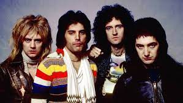

Reino Unido que lidera Alex Turner sigue siendo muy escuchado por millones de fans
que estan a la espera del nuevo material de la banda que se dice llegara este año.
vendido en 2021y a 30 anos de la muerte del aclamado vocalista sigue presente en
la gran mayoria de los rankings de lo mas escuchado, en buena medida gracias a la
pelicula "Bohemian Rhapsody" que los presento a una nueva generacion.

Harry Styles y Zayn Malik no deja de acumular millones de reproducciones en la
plataforma de streaming a pesar de haber terminado su actividad en 2016, por lo que
mucha gente considera que una reunion del grupo en este ano seria todo un
fendmeno.

fue del gusto de muchos de sus fans, el grupo de pop que lidera Adam Levine ha
dejado en el gusto popular canciones muy emblematicas de las dos décadas
pasadas y las cuales se siguen escuchando bastante hoy en dia.
clics en la actualidad, pero especialmente en estos ultimos meses las canciones de
John Lennon, Paul McCartney, George Harrison y Ringo Starr volvieron a tener un
auge gracias al estreno del documental “The Beatles: Get Back”.
década que logran estar entre lo mas escuchado es este quinteto de Estados Unidos
que con discos como “Wiped Out!" de 2015 y “Chip Chrome & The Mono-Tones"
cautivaron a toda una generacion y marcaron la pauta del sonido actual en el
mainstream.

que a través de los anos posiciond canciones que hoy en dia son clasicos para una
gran cantidad de fans. Ademas, su reciente colaboracion con BTS en "My Universe*
sigue acumulando millones de reproducciones.
hizo popular a este grupo con su primer disco "Night Visions® de 2012 sigue siendo
todo un referente diez afos después, y no es de sorprender que otras bandas hayan
seguido la pauta del estilo caracteristico que puso a Imagine Dragons en el gusto de
tanta gente.

chicos de Bangtan Sonyeondan rompiendo récords cada mes y posicionandose
como los reyes absolutos del streaming, algo que ha seguido sucediendo en los
ultimos meses con los lanzamientos solistas de los idols.